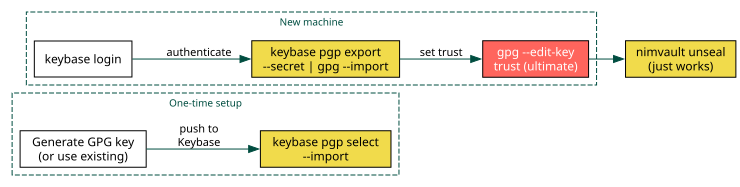

Keybase GPG Key Management¶
Use Keybase as a portable store for your GPG private key. On any new machine,
pull the key from Keybase to provision GPG, and nimvault works immediately.

Why Keybase¶
GPG private keys are the single point of failure for any vault system. Without the private key, sealed blobs are unrecoverable. Keybase solves the distribution problem: your key is stored encrypted on Keybase’s servers, tied to your identity, and retrievable on any machine where you can authenticate.
This avoids:
Manual
gpg --export-secret-keys/gpg --importover USB or SSHStoring private keys in dotfile repos (even encrypted, this is fragile)
Losing access when a machine dies
One-time setup (existing key)¶
If you already have a GPG key (as is typical when you already use nimvault),
push it to Keybase:
# List your GPG keys to find the fingerprint
gpg --list-keys --keyid-format long
# Push to Keybase (imports the secret half into Keybase's keyring)
keybase pgp select --import
Keybase shows your key fingerprint and asks for confirmation. After this, the key is stored in Keybase and tied to your identity proofs.
To verify the push worked:
keybase pgp list
If you need to update the key after adding UIDs or extending expiry:
keybase pgp update
One-time setup (new key)¶
Generate a fresh key if you do not have one:
gpg --full-generate-key
# Choose: RSA 4096, no expiry (or long expiry), your email
Then push to Keybase with keybase pgp select --import as above.
Alternatively, generate the key directly inside Keybase:
keybase pgp gen
# This creates the key in Keybase AND imports it into local GPG
Provisioning a new machine¶
On the new machine, install GPG and Keybase, then:
# 1. Authenticate with Keybase
keybase login
# 2. Export the secret key from Keybase into local GPG
keybase pgp export --secret | gpg --import
# 3. Also export the public half
keybase pgp export | gpg --import
# 4. Set trust level to ultimate (required for encryption without prompts)
gpg --edit-key YOUR_KEY_FINGERPRINT
# At the gpg> prompt: trust -> 5 (ultimate) -> quit
Replace YOUR_KEY_FINGERPRINT with the full fingerprint shown by
keybase pgp list, e.g. 74B1F67D8E43A94A755407689CCCE36402CB49A6.
After this, nimvault unseal works immediately because GPG has the private key.
Complete workflow¶
A typical cross-machine workflow combining Keybase and nimvault:
# Machine A: add secrets and push
cd ~/dotfiles
nimvault add ~/.config/secret/tokens.json
nimvault seal
git add .vault/ && git commit -m "vault: add tokens"
git push
# Machine B: provision GPG via Keybase and pull secrets
keybase login
keybase pgp export --secret | gpg --import
keybase pgp export | gpg --import
gpg --edit-key 74B1F67D8E43A94A # trust -> 5 -> quit
cd ~/dotfiles
git pull
nimvault unseal
# ~/.config/secret/tokens.json is restored
Verifying the setup¶
After provisioning, verify everything works:
# GPG key is present with secret material
gpg --list-secret-keys --keyid-format long
# Should show your key with [ultimate] trust
# nimvault can read the manifest
nimvault list
# Encrypted blobs can be decrypted
nimvault status
# All entries should show [in-sync] or [missing] (if not yet unsealed)
Security notes¶
Keybase encrypts your secret key with your Keybase passphrase before storing it. Choose a strong passphrase.
The
keybase pgp export --secretcommand may prompt for your Keybase passphrase. Use--unencryptedonly if piping directly intogpg --importin a single command.On shared machines, remove the key after use:
gpg --delete-secret-and-public-key YOUR_KEY_ID.Keybase identity proofs (Twitter, GitHub, DNS) let others verify that the public key belongs to you, but for nimvault the important part is private key portability.